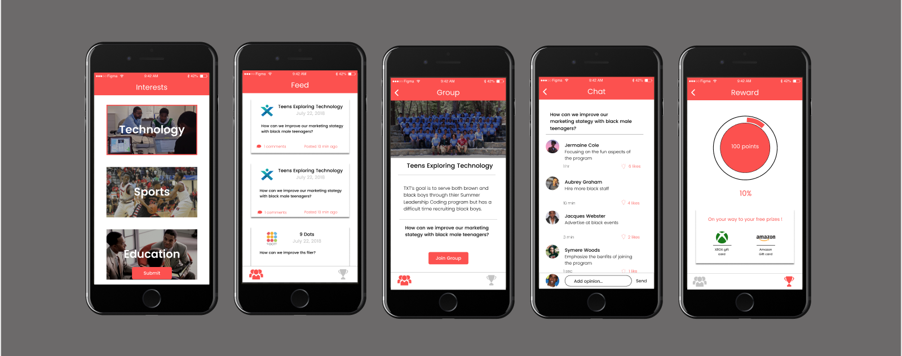
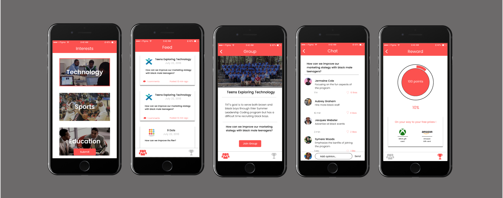

I was born on October 17, 2001 from two mexican migrant parents with hope for a better future. Since the young age of 10 I played sports till college developing a strong competitive nature. I was taught nothing is given in life, but earned as a result I wanted something exciting.
While playing sports, I was fascinated with video games ranging from Gamecube to Ps4 showing me a glimpse of the future of technology. I was born in an era in which technology is involved in practically every aspect of life, but continuingly improving and innovating. Compared to the accounting industry in which there hasn’t been big change in years, tech is constantly changing and I want to be part of this industry.
My first step in the tech industry was understanding the essential roles in technology through a summer program I attended at USC referred to as Teens Exploring Technology. Students learn the core skills for the technology and are put in teams with unique rolls developing a solution to a problem. My team was limited to two members so as a result I was incharge as product and project manager.
I was able to learn more than usual students understanding the marketing and business aspects of a tech startup. The next year I attended the same program, however, I had a different role being UX/UI designer. I shifted from the business side to understanding the user interface and experience. I enjoyed the strong focus on creativity while being a designer, but I found more interest in being a product manager.
The next summer I interned at Martin Bros a construction company focusing on dry wall and innovation solutions. While interning I was able to understand augmented reality in the construction field through creating my own model. In addition, we were assigned to launch their Youtube channel by creating fully edited videos. My following summer experiences help further understand the impact of technology and the many careers available.
My two main goals is to be a product manager and be able to help the world in any manner through tech. The role product manager interests me from other roles is because it's a job that doesn’t have a typical day. Likewise to the industry, it’s a career that is constantly changing demanding innovative and creative thoughts. I want to be in a career that doesn’t bore me like a 9 to 5, I want to be challenged and be around like-minded peers.
As product manager you are in charge of leading a team while creating the best product. Once the product it’s over to the next different product. As I learn more about the role, I may want to become a product manager with a design focus because of my experiences. Moving away from careers in tech, my main motivation to work in technology is due to as I mention tech is involved in every aspect of life.
Technology has integrated itself in society carrying strong value that can perhaps be the best way to help the world. There are many problems in life and tech is the best way to combat these issues to progress humanity.
• Assisted in preparation of subjects for the experiment
• Tested the performance and accuracy of the experiment
• Gained insight in the restaurant industry
• Learned how to collaborate with coworkers in a fast paced environment
• Gained insight in the fabrication process of construction
• Learned an intermediate level of Autodesk Revit and Dynamo
• Responsible for launching the Youtube channel of Martin Bros
 
